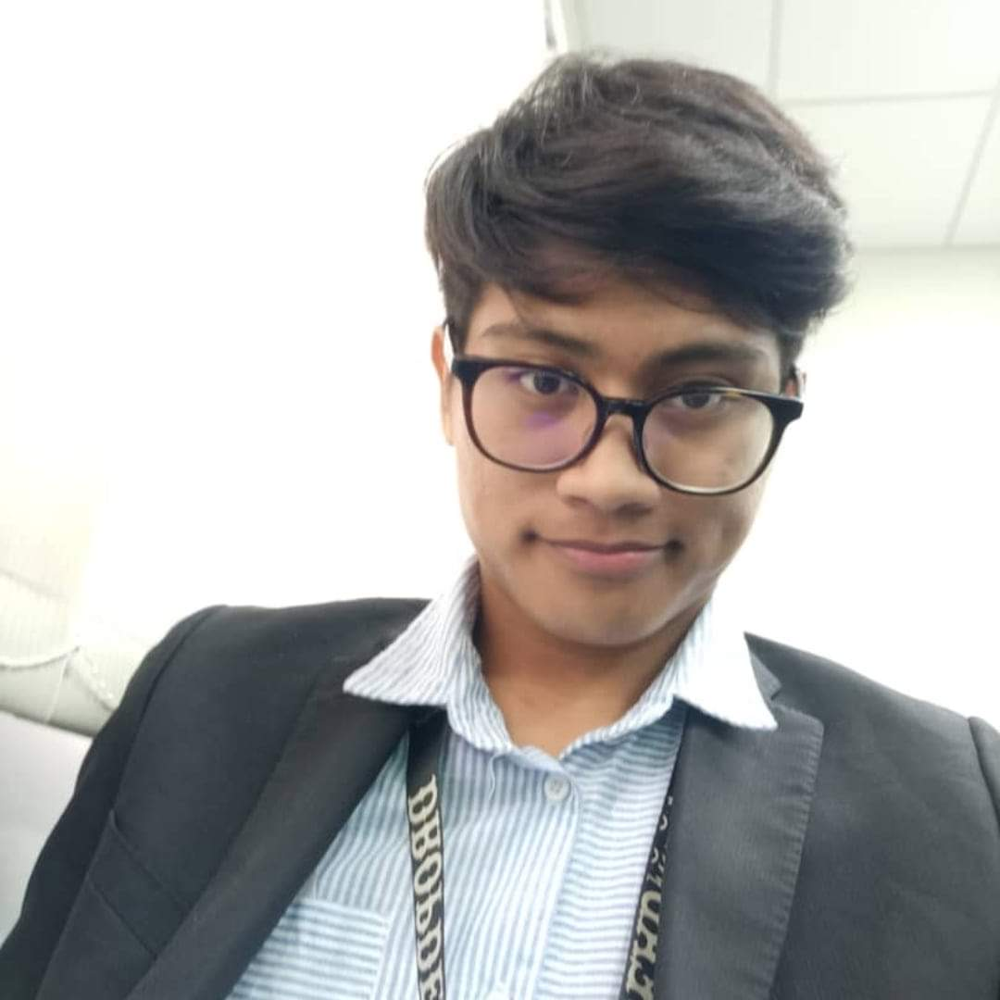

THIS IS MY FAMILY
Nur Ammar, Nov 07, 2020
Hey, let me introduce you guys of my family. First of all, I am the youngest child of my family. I have a brother and sister who are married with their beloved partner. We are the children of Mustafa and Rohanah. We are a happy family which kind a family that spend most of the time together and take care of each other. Even when we are busy, we would still spend time together no matter what. As a young teen, I am very appreciated of my family members because they always take a good care of me and support me when I have a problem in term of motivation and also financial especially my parents. My father is an executive officer while my mother is a housewife. Furthermore, I also have a cute little niece named Khadeeja. She is always being my parents favourite grandchild and has the most attention given XD.
And this our raya photo together during past years! hehee
Terengganu trip
Nur Ammar, Oct 01, 2020
We woke up early at 5.30am (in Kuala Tahan) and were prepared to make the 8 hour bus ride from Kuala Terengganu our longest day of the holiday. At around 7:30 am, we drove to the lobby and had a hearty breakfast of coffee, juice, scrambled eggs, toasted toasts, banana pancakes. The decision was taken to change minibusse, as there was no seat-belt in two siting areas after a poorly maintained track for the first hour (often driving on the roadside with loose gravel in an effort to avoid huge bitumen potholes). Although seat belts have been the least of our issues, the emphasis on safety was good. The endless horizon of palm groves continued all the time.
We travelled back to Jerantut and waited for our new minibus on the side of the road. Our packs were moved to the new bus and we re-started our trip at 10.45am. We were just about 45 minutes on the road when we had lunch on a big streetfront restaurant at 11.30am. We walked past the various sheds and ordered the crystal mosque crystal tarik (pulled sweet milky tea) and the sweet roti (sweet flaky Indian brown) which we thought was toasted with kaya (coconuts and egg jam). It was an easy lunch, but we just wanted it. For the remainder of the trip we took a few snacks and headed out again at midday. It was a high speed ride - the road had plenty of bumps and the suspension of the minibus was incredibly springy!
It was raining, I woke from a short sleep. When I looked out the horizon spread clear fallen ground. We took a can of cold white coffee and a package of chocolate coated peanuts in the service station about 14.30 p.m. The rain stopped and the sun set (and for the rest of the afternoon it continued). At 3:30 pm (we were on the street for seven and a half hours) finally we arrived in Kuala Terengganu and went to Seri Malaysia, our hotel for a day.
We dropped our luggage, called a taxi and headed straight towards the crystal mosque. We have been met by four volunteers.The ho ann kiong temple ho a kiong temple at the entrance, fitting robes and taking us on an informative, short visit to the Mosque. At the end of the tour we had a booklet entitled "Invitation to understand Islam, One God; One Humanity; One Religion; Many Prophets" by our leader (a Muslim woman who used to be catechistic). The genealogy of Muhammad and Jesus was significant and was traced back to Adam and Eve (Hawwa). I felt grateful for the Islam overview given by our voluntary guide. She clarified the Islamic prayer idea as four young children prayed before us. I'm sure one of them was going through the motions with the other three, because he kept looking over us and smiling with his mid-prayer while they were concentrating. He was seven or so.
The gentle and unsupportable approach of the Crystal Mosquito volunteers differed so strongly from the clear and troubling approach taken by a number of men outside the Penang Capital Keling Mosque, who as I passed over the lane, presented me with a brochure entitled, 'Islamic Vision, life after death.' I could not really pass the opening sentence of the brochure: "The question whether there is a ho a kiong temple ho a kiong temple life after death, does not fall under science's jurisdiction as science concerns only sensitive data classification and analysis." In addition, the brochure was not very compelling "five very convincing reasons to believe in life from death."
I have to note our taxi driver before I go any further. We ordered the taxi through the workers at our hotel and indicated that an RM40 fare was typical for a return trip to the Crystal Mosque. I asked how much it would cost to get back on the taxi when the taxi arrived. He grinned at me, took a plumb and wrote 45 (with a number of weapons that seemed to require going to the Mosque) and 25 (with the appearance that they would like to return from the mosque) at the bottom of his palm. This has been interpreted as meaning RM70 for the journey (RM45 over and RM25 over). The late afternoon, I decided, and the following morning we left Kuala Terengganu. He took us to the mosque, showed us how to get in crystal mosque crystal mosque in 30 minutes (he used my watch to specify how long we had). He showed us how to pick us up in 30 minutes. He was waiting for us when we came out of the mosque, but he frightened that he had to go to the bathroom. It allowed us a while to take a few more pictures. He finally came up, apologised to us, went to the taxi and led us back to the hotel. I went to hand him RM70 when we arrived, and he erupted laughingly. He took a note of RM50 from my hand and changed RM10. He started to laugh and we realised that his quote was when he went to the Mosque for us (16:45 pm) and when we left (5:25 pm). Honesty does not surprise us too much.
After thanking and saying goodbye to our taxi driver, we went to a nearby camera shop to search my camera. It was pointless, as the inner framework had been shortened. It wasn't shocking, but nonetheless irritating. For the rest of the afternoon, we chose to visit the busy Chinatown of Kuala Terengganu, which includes the food courtyard, the hawker's market and the Puteri mosque crystal, the Malaysian restaurant, on the seaside (a 20 minutes walk). The owner was asked if he had a deep-fried fish paste and sago sausage on his menu. He did, but went to a market in the vicinity and showed us where to buy it. We collected three sausages for RM1 (30 cents) with a small plastic bag of homemade chilli sauce. It was tasty (though not appetising). It was delicious. We returned to the hotel for dinner and refreshed ourselves, heading for the Town City Food Court.
People were extremely nice at Kuala Terengganu (within Malaysia in general). We were really happy here and wished us more time to discover this city's intricacies. I know it's supposed to be an end, but for a little longer we'd love to stop. We returned to the hotel and had a restricted wireless Internet access in the lobby. At around 10 pm and until midnight, we retired to our room and went through some blog pictures.
My Best, cheers!
About Me
Living in Bandar Puncak Alam and studying in UiTM Rembau, Negeri Sembilan, a young teen that really commited in information technology studies. Looking forward to pursuing his studies in Degree of Content Management, so he can chase his dream to become information professional.